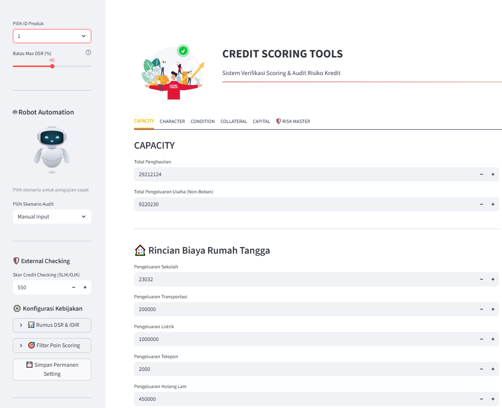
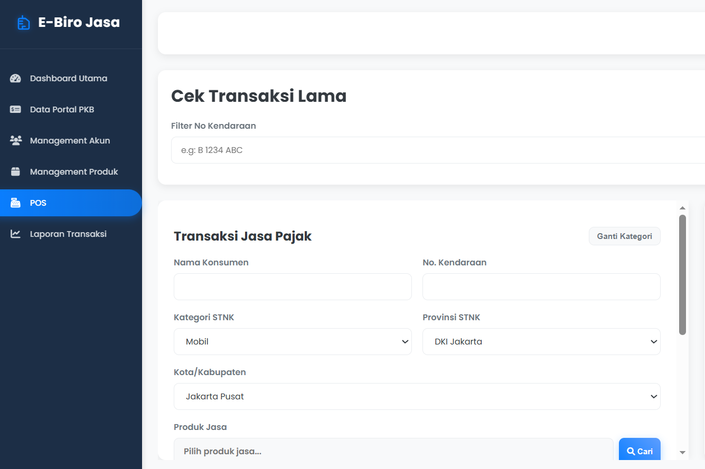
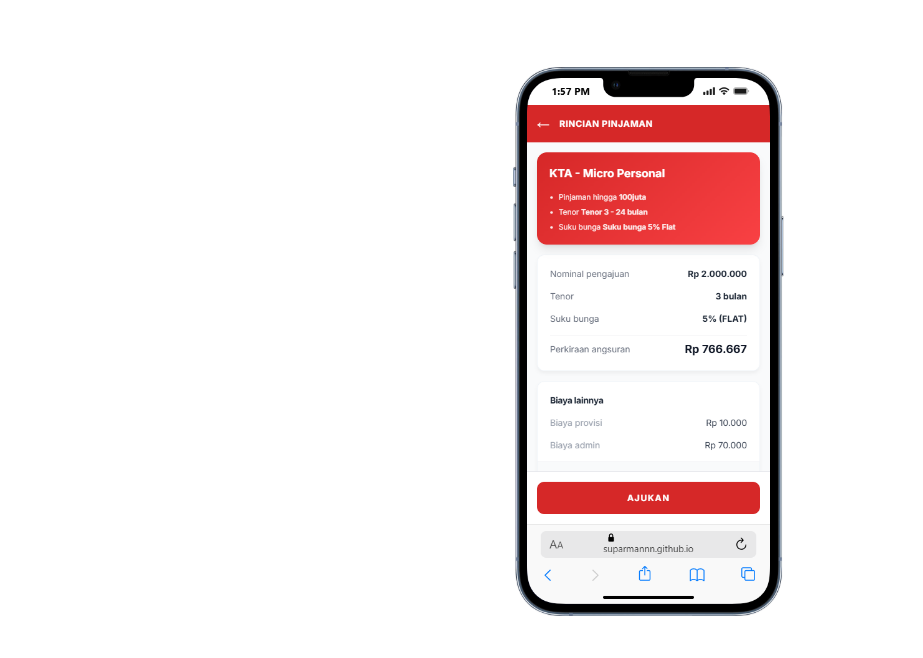
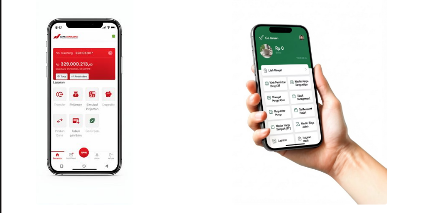

Saya adalah IT konsultan senior. Bagi saya, menjadi pembelajar seumur hidup serta bekerja secara produktif dengan penuh tanggung jawab dan integritas adalah suatu keharusan.
STMIK INSAN PEMBANGUNAN - Tangerang
IPK: 3,79 / 4,00
✨ Meraih beasiswa selama 3 semester.
Digital Skola · Juli 2022 - Okt 2022
Mempelajari dasar-dasar pemrosesan data.
Badan Nasional Sertifikasi Profesi · 2022
Inovasi Kreasi Mandiri · 2019
PT. Teknologi Operator Prima · Tangerang (Kontrak)
Melayani peran ganda sebagai Analis dan Koordinator Proyek dalam pengembangan solusi Fintech (SaaS) dan aplikasi keberlanjutan untuk sektor perbankan (BPR).
PT. SIGMATECH · Jakarta (Penempatan PT. MERLIN INTEGRASI & SOLUSI)
PT. TETATRANS · Jakarta (Part-Time)
PT. Cannet Elektrik Indonesia · Tangerang
💼 Hard Skill
🤝 Soft Skill
🛠️ Software Skill

Aplikasi analisis kelayakan kredit menggunakan Streamlit untuk mempermudah proses audit BPR. Tools ini membantu tim analis kredit dalam menilai risiko peminjaman secara lebih objektif dan efisien.
View Project
Pengembangan aplikasi E-Biro Jasa adalah solusi digital berbasis web/mobile yang dirancang untuk memodernisasi layanan pengurusan dokumen administratif (seperti STNK, SIM, atau perizinan lainnya).
View Project
Simulasi perhitungan kredit BPR Danagung. Untuk pengecekan hasil development sesuai dengan perhitungan yang semestinya.
View Project
Inovasi Digital untuk Transformasi Perbankan dan Lingkungan.Solusi perbankan seluler inovatif yang memudahkan pengguna untuk mengelola keuangan mereka dengan aman dan efisien.
Mari berkolaborasi untuk solusi sistem Anda